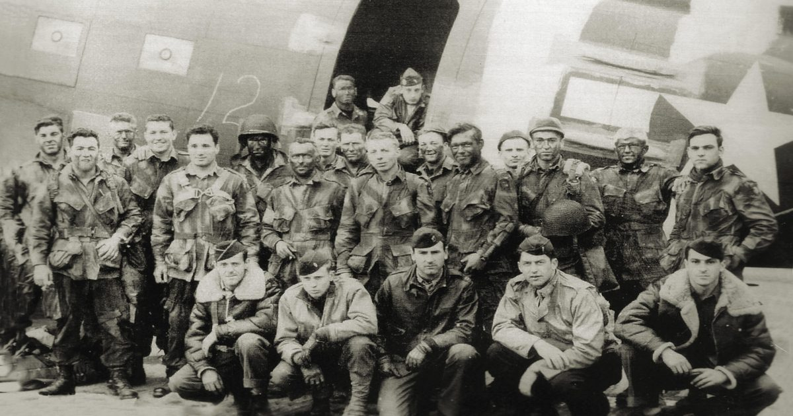

Могут ли эти американские десантники помешать немцам добраться до пляжа Юты в день «Д»?
Мирная французская сельская местность вокруг моста Ла-Фьер переросла в отчаянную перестрелку 6 июня 1944 года.

Мирная французская сельская местность вокруг моста Ла-Фьер переросла в отчаянную перестрелку 6 июня 1944 года.